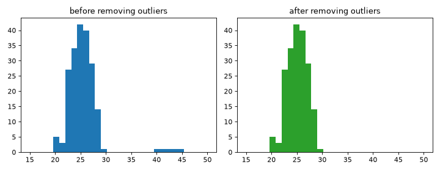

センサーデータの統計処理と外れ値の除外
計測データには、センサーの不具合や記録ミスによる外れ値が混ざることがあります。numpy を使って基本統計量を求め、外れ値を検出・除外する例です。
データの準備
ここでは乱数で模擬的な気温データを作成し、意図的に外れ値を混入させます。
import numpy as np
rng: np.random.Generator = np.random.default_rng(seed=0)
data: np.ndarray = rng.normal(loc=25.0, scale=2.0, size=200)
data[:5] = rng.uniform(40.0, 45.0, size=5)
# 先頭 5 件を明らかな外れ値（異常な高温）に置き換える
基本統計量の算出
mean: np.float64 = data.mean()
std: np.float64 = data.std()
print(f"平均: {mean:.2f}, 標準偏差: {std:.2f}")
外れ値の検出と除外
平均から標準偏差の 2 倍を超えて離れた値を外れ値とみなし、ブールインデックスで抽出・除外します。
is_outlier: np.ndarray = np.abs(data - mean) > 2 * std
outliers: np.ndarray = data[is_outlier]
cleaned: np.ndarray = data[~is_outlier]
# ~ はブール配列の各要素の真偽を反転させる演算子（ここでは外れ値ではない要素を取り出す）
print(f"外れ値の件数: {outliers.size}")
print(f"除外後の件数: {cleaned.size}")
グラフとして可視化する
外れ値を含む元のデータと、除外した後のデータのヒストグラムを並べて比較します。範囲（range）を揃えることで、分布の違いが見やすくなります。
import numpy as np
import matplotlib.pyplot as plt
from matplotlib.axes import Axes
from matplotlib.figure import Figure
rng: np.random.Generator = np.random.default_rng(seed=0)
data: np.ndarray = rng.normal(loc=25.0, scale=2.0, size=200)
data[:5] = rng.uniform(40.0, 45.0, size=5)
mean: np.float64 = data.mean()
std: np.float64 = data.std()
is_outlier: np.ndarray = np.abs(data - mean) > 2 * std
cleaned: np.ndarray = data[~is_outlier]
fig: Figure
axes: np.ndarray
fig, axes = plt.subplots(nrows=1, ncols=2, figsize=(9, 3.5))
bin_range: tuple[int, int] = (15, 50)
axes[0].hist(data, bins=30, range=bin_range, color="tab:blue")
axes[0].set_title("before removing outliers")
axes[1].hist(cleaned, bins=30, range=bin_range, color="tab:green")
axes[1].set_title("after removing outliers")
fig.tight_layout()



外れ値を除外すると、分布が本来の気温データらしい形（正規分布に近い形）になることがグラフから確認できます。